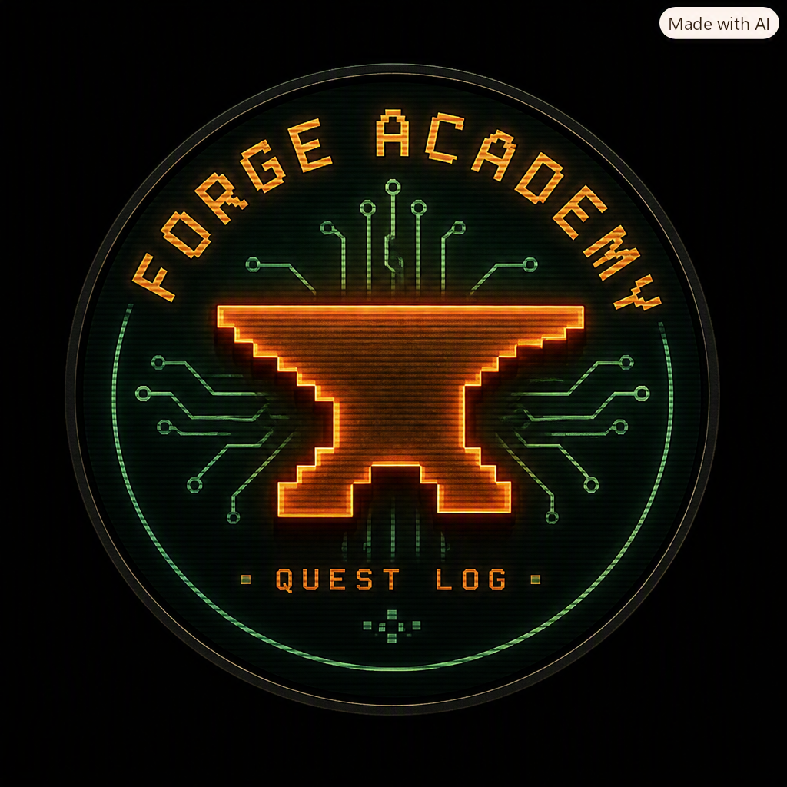

Forge Academy
Sign in with your Momma Money account to sync Anna & Ryan's progress.
Log In
Who's using this?
Pick your profile before you start today's work.

Forge Academy | Quest Log
Forge Academy — Student Portal · part of the
Momma Money
family
Home
Today
Planner
Library
Arena
📁 Completed